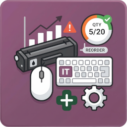

Extend your IT Equipment Management ecosystem. This module provides complete control over your IT consumables. Say goodbye to sudden stockouts of printer cartridges or missing keyboards.
bp_it_equipment module to assign consumables directly to existing IT assets and employees.

Automate stock control. Set minimum thresholds and never run out of essential supplies.
Auto-generate orders for ready-to-use peripherals and refilled cartridges.
Log issues clearly. Link consumables directly to specific employees and IT equipment.
We optimize the workflow by eliminating internal refilling processes. The system tracks stock limits and automatically alerts you to order ready-to-use items from your trusted suppliers.